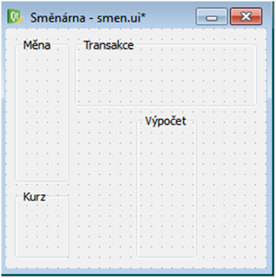
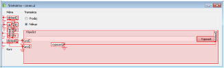

Qt Designer¶
QtDesigner je velice užitečný nástroj, který umožňuje vytvářet grafické rozhraní, které přímo vidíte. Jedná se o WYSIWYG editor, to znamená, že dostanete stejně vypadající gui, jaké si vytvoříte. QtDesigner obsahuje všechny widgety, které můžete používat při běžném programování v PyQt. Jdou zde, předpřipravit vazby pro widgety a to i se sloty, které si vytvoříme. Nyní si popíšeme jak QtDesigner vypadá a poté si ukážeme, jak vytvořit v QtDesigneru. aplikaci.
První kroky v QtDesigneru¶

Nějak takto může vypadat QtDesigner při prvním spuštění. Jak můžeme vidět, tak je aplikace dělena do bloků, které můžeme libovolně přesouvat a oddělovat od aplikace. Nyní se blíže seznámíme s těmito bloky, a co v nich najdeme.

Kdykoliv spustíte QtDesigner, bude zobrazen tento dialog, ve kterém si vybíráme, jaký projekt budeme vytvářet. V spodní části si můžeme vybrat z posledních projektů, na kterých jsme pracovali nebo si otevřít projekt, který máme někde uložen. Další možností je vytvořit si zcela nový projekt. Můžeme si vybrat, zdali budeme chtít vytvářet dialogové okno, hlavní okno aplikace nebo vlastní widget. Projektu můžete nastavit pevnou velikost z předpřipravených možností, ale tyto možnosti jsou bohužel značně omezené.

Po vytvoření nového projektu se zobrazí v šedé části okna nové prázdné okno, do kterého poté můžeme přetahovat ostatní widgety. Toto okno má již v základu horní lištu menu a spodní stavový řádek, tyto widgety můžeme zrušit kliknutím pravým tlačítkem na daný widget a vyjmutím tohoto widgetu.

Tento blok obsahuje všechny dostupné widgety v PyQt4, tyto widgety jsou zde rozřazeny do skupin. Widgety můžeme přidávat do našeho okna to jednoduchým přetažením požadovaného widgetu do naší aplikace. V horní části tohoto bloku si můžete vyhledat widget pomocí jeho názvu.

Tento blok nám umožňuje měnit vlastnosti jednotlivých widgetů. Jako první atribut je vždy jméno proměnné, do které bude widget uložen. Další upravitelné vlastnosti záleží na tom, jaký widget upravujeme. Většinou jde nastavit přesná velikost widgetu a podobně.
Tento blok slouží pro zobrazení všech widgetů, které máme v naší aplikaci. Jsou zde i zobrazeny vztahy mezi jednotlivými widgety. Tento blok se výborně hodí pro vybraní widgetu, který chceme upravovat.
Ukázková aplikace¶
Nyní si ukážeme, jak můžeme vytvořit jednoduchou aplikaci v QtDesigneru a také jak vytvořit vazby mezi widgety. Budeme vytvářet aplikaci Směnárna, která nám bude umožňovat počítání prodávat měny a nakupovat měny a také nám ukáže kolik nás daná transakce stát.

Do hlavního okna vložíme tabulkové rozložení. A poté vložíme čtyři Group Box widgety. Těmto widgetům nastavíme titulky v bloku editoru vlastností. Titulek nastavíme pomocí přepsání hodnoty parametru title. S trochou píle může vypadat naše aplikace jako na obrázku nahoře.

Do group boxu s titulkem měna si umístíme přepínací tlačítka. Toho, aby byla tlačítka umístěna v group boxu, docílíme přetažením přepínacího tlačítka na group box. Group boxu můžeme nastavit rozvržení, tím že označíme group box a výběrem rozvržení, které chceme použít. Přepínací tlačítkům nastavíme popisek přepsáním parametru text. Také je užitečné si nastavit zaškrtnutí jednoho tlačítka v každé skupině. To provedeme zaškrtnutím políčka checked v editoru vlastností. Do ostatních group boxů vložíme widgety podle obrázku. Označené widgety jsou label s parametrem text nastaveným na prázdný řetězec. V group boxu s popiskem výpočet je nastaveno tabulkové rozvržení. Poslední věcí, kterou musíme nastavit v naší aplikaci jsou vazby.

Pro úpravu signálů a slotů musíme vybrat v horním panelu tlačítko s názvem upravit signály a zdířky. Nyní máme možnost vytvářet vazby. Stačí zmačknout widget, z kterého chcete vytvořit vazbu a přetáhnout šipku nad widget se kterým chceme vytvořit vazbu. Pokud bychom chtěli vytvořit vazbu na vlastní slot, je dobré umístit vazbu někam do okna.

Po vytvoření vazby se nám zobrazí okno upravit spojení, které nám umožňuje nastavit signál a slot pro naši vazbu. Pokud chceme vytvořit vlastní signál nebo slot můžeme použit tlačítko upravit, které nám zobrazí další okno, ve kterém máme možnost při kliknutí na tlačítko s obrázkem plus vytvořit nový slot nebo signál. Takovýto signál nebo slot si musíme poté samozřejmě v kódu vytvořit.
Takto nějak může vypadat naše aplikace po přidání vazeb. Všechna přepínací tlačítka v group boxu měna mají nastaveny signál clicked a slot kurz a tlačítko s popiskem vypocet má signál clicked a slot Vypocet. Tímto máme vyřešenou naši aplikaci a stačí nám projekt uložit. Projekt bude uložen jako speciální typ soubor s názvem .ui, který musíme převést na python kód a to si nyní ukážeme.

Pro převedení .ui souboru musíme použít příkazovou řádku, do které napíšeme příkaz podle obrázku. Prvním parametrem je .ui file a –o parametr a dalším parametrem je soubor s příponou .py . Tento příkaz nám vytvoří python kód naší aplikace do tohoto kódu stačí již jen přidat naše sloty a inicializovat naše vytvořené gui.